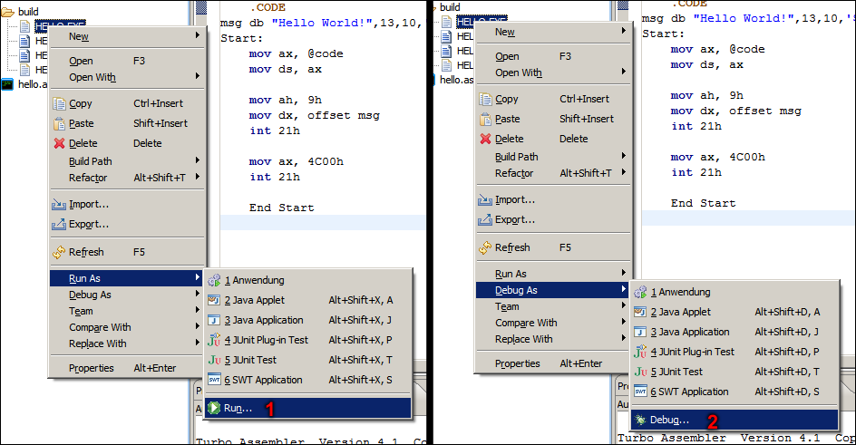
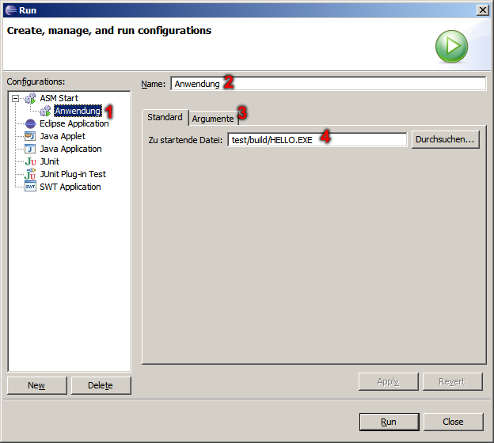
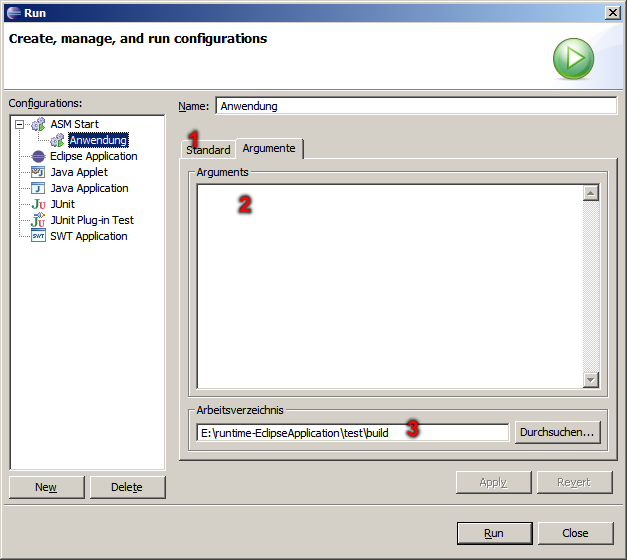

ASM Plug-In - Run/Debug Optionen
Hier wird gezeigt wie man zu den individuellen Einstellungen für das Ausführen bzw. Debuggen von erstellten Programmen kommt.

- Individuellen Einstellungen für das Ausführen.
- Individuellen Einstellungen für das Debuggen.
In diesem Dialog können Sie nun festlegen wie die individuelle Einstellung heißen soll und für welche Datei.

- Auswahl der individuellen Einstellung.
- Name der individuellen Einstellung.
- Weitere Parameter festlegen.
- Datei auf die sich die individuellen Einstellungen beziehen.
In diesem Dialog können Sie nun festlegen welche Parameter und welches Arbeitsverzeichnis die zu startende bzw. debuggende Datei verwendet werden sollen.

- Standard-Einstellungen festlegen.
- Parameter für das Ausführen bzw. Debuggen.
- Festgelegtes Arbeitsverzeichnis.